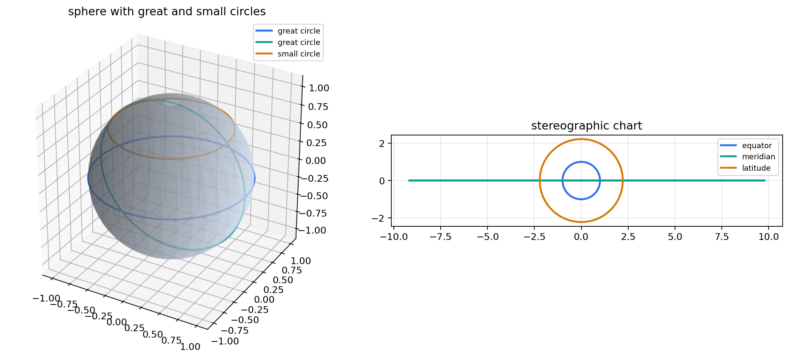
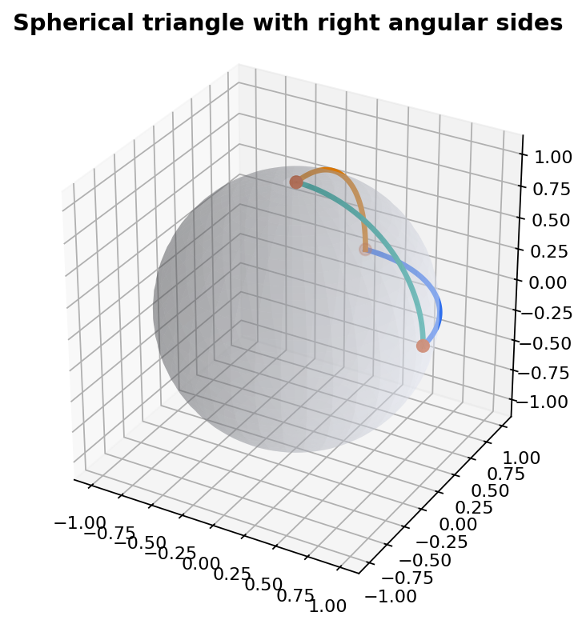

The unit sphere is \(S^2=\{p=(x,y,z)\in\mathbb R^3:x^2+y^2+z^2=1\}\). A chart assigns local coordinates, but the object being measured remains the embedded locus.
Three reading levels
Synthetic: points, planes, circles, tangencies, and intersections.
Algebraic: unit residuals, dot products, determinants, and parametrized curves.
Metric or topological: angle, area, compactness, orientation, and connectedness.
Misconception to disarm
A map of the sphere is a measurement device. It is not a flat replacement for the sphere.
A great circle is \(S^2\cap P\), where \(P\subset\mathbb R^3\) is a two-dimensional linear plane through the origin.
Geodesic statement
If \(p\ne\pm q\), the unique shortest path from \(p\) to \(q\) is the shorter arc of the great circle in the plane \(\operatorname{span}\{p,q\}\). Its length is \(\arccos(p\cdot q)\).
Proof roadmap
Rotate coordinates so the two points lie in an equatorial plane.
Compare any competitor with its projected angular coordinate.
Use symmetry: rotations preserve both the sphere and arc length.
Spherical Triangles: Curvature Made Visible
Angle excess is area
Girard formula on the unit sphere
For a geodesic triangle with interior angles \(\alpha,\beta,\gamma\),
Positive curvature is detected by angle sum greater than \(\pi\).
Triangle
Angles
Area
Tiny triangle
Almost Euclidean
Almost zero excess
Octant triangle
\(\pi/2,\pi/2,\pi/2\)
\(\pi/2\)
Notebook check
The generated triangle has side lengths \(AB=BC=CA=\pi/2\), recorded numerically as 1.5707963267948966.
Notebook Lab: Picture Versus Invariant
Generated artifacts, not fixed illustrations

Sphere with great and small circles paired with a stereographic chart.
Reading target
The chart keeps the circle family legible, while the sphere view remembers which circles are great and which are small.

Spherical triangle artifact with angular side lengths.
Check record
`all_sides_pi_over_2 = true`; `latitude_unit_residual_max = 0.0`; the artifact root is `artifacts/chapter-18`.
Topology: No Single Honest Flat Atlas Page
Two charts, one compact surface
Compactness obstruction
The sphere is compact. A single global chart homeomorphic to \(\mathbb R^2\) would make it noncompact, so any plane coordinate system must either remove a point or identify boundary behavior.
North and south stereographic charts
On the overlap, the transition map has the form
\((u,v)\longmapsto {1\over u^2+v^2}(u,v)\)
up to orientation convention. The transition is smooth away from the origin.
Topological data to keep visible
Removing one point makes a plane chart possible.
Orientation is tracked by compatible transition maps.
The sphere closes up at the point a chart sends to infinity.
Clifford Parallelism: Circles Filling \(S^3\)
A higher-dimensional sphere lesson
Hopf-style circle family
Inside \(S^3\subset\mathbb C^2\), fix a complex line \([a:b]\). The set
\(H_{[a:b]}=\{(e^{it}a,e^{it}b):t\in\mathbb R\}\)
is a great circle. These circles partition \(S^3\).
Clifford parallel intuition
Distinct fibers are disjoint but evenly spaced.
Every fiber has the same length and the same local role.
Any two fibers are linked once in the projected picture.
Vocabulary caution
Parallel here is spherical and global, not Euclidean coplanar parallelism.
Villarceau Circles From Clifford Tori
Projection turns fibers into torus circles
Clifford torus in \(S^3\)
For \(0\(T_r=\{(z_1,z_2): |z_1|=r,\ |z_2|=\sqrt{1-r^2}\}\).
Hopf fibers lie on these tori as distinguished circular curves.
Projected picture
After stereographic projection from \(S^3\) to \(\mathbb R^3\), the torus becomes a Euclidean torus and some Hopf fibers appear as Villarceau circles: slanted circles drawn on the torus.
Geometric lesson
A circle can be intrinsic to a sphere-family construction even when its projected Euclidean position looks surprising.
The Mobius Group Acts On The Riemann Sphere
Symmetry through stereographic coordinates
Mobius transformation
On \(\widehat{\mathbb C}=\mathbb C\cup\{\infty\}\),
Stereographic projection identifies \(\widehat{\mathbb C}\) with the sphere.
What the group preserves
Generalized circles map to generalized circles.
Angles are preserved: the action is conformal.
The cross-ratio of four points is preserved.
Spherical distance is preserved only by the rotation subgroup.
Feature
Rotations
General Mobius
Chart warning
Distance
yes
not generally
pixels mislead
Worked Example: Same Points, Two Readings
An invariant check for a chart drawing
Choose three coordinate points
Let \(A=(1,0,0)\), \(B=(0,1,0)\), and \(C=(0,0,1)\). Then
\(A\cdot B=B\cdot C=C\cdot A=0\)
and every spherical side length is \(\arccos(0)=\pi/2\).
Now project
In a stereographic chart the Euclidean distances among the plotted points are not all spherical lengths. The chart is useful, but the dot-product check is decisive.
Instructor prompt
Move \(C\) along the meridian and predict which check changes: unit residual, angular side length, chart radius, or angle excess.
Recap: How To Read The Sphere
One deck, five contracts
Charts
Use charts to compute locally. Expect distortion unless the invariant explicitly says otherwise.
Metric
Use \(d(p,q)=\arccos(p\cdot q)\). Great-circle arcs, not Euclidean chart segments, are geodesic candidates.
Measure
Area is intrinsic and appears in charts through a density. For triangles, excess records curvature.
Topology
The missing point in stereographic projection is not a flaw; it is the trace of compactness.
Symmetry
Mobius maps preserve generalized circles and angles. Rotations form the distance-preserving part.
Exit exercise
Give one example of a chart-visible feature and one invariant feature for the same spherical construction. Explain which one should survive a Mobius transformation.
Final invariant checklist
Unit residuals near zero; angular distances from dot products; circle families preserved by stereographic projection; area corrected by density; notes mirrored in `chapter-18-speaker-notes.json`.